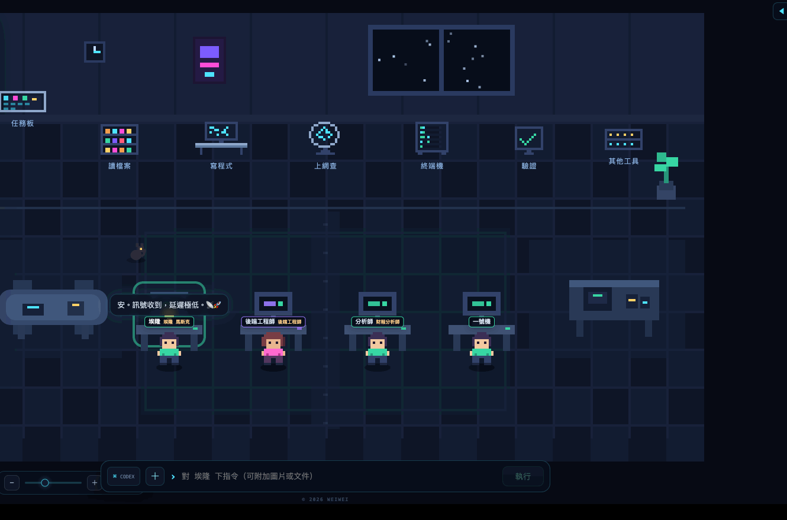
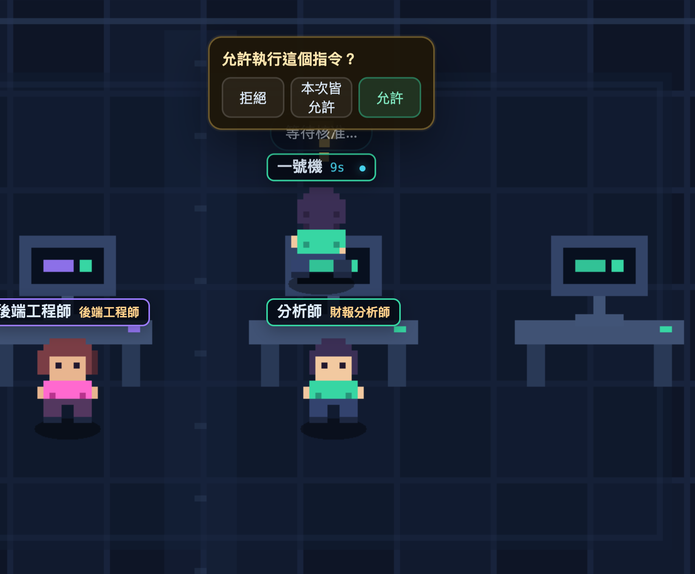
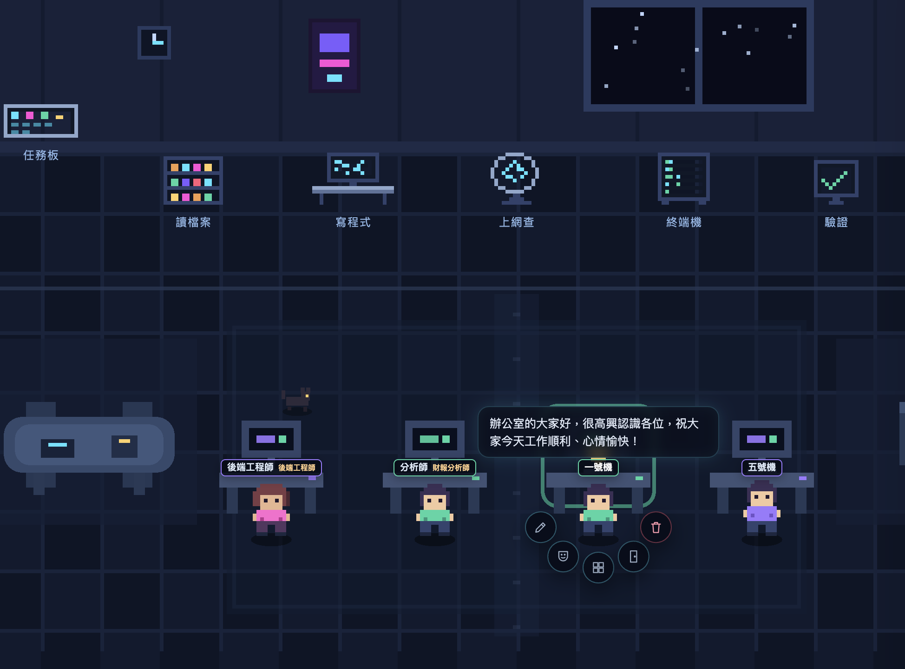
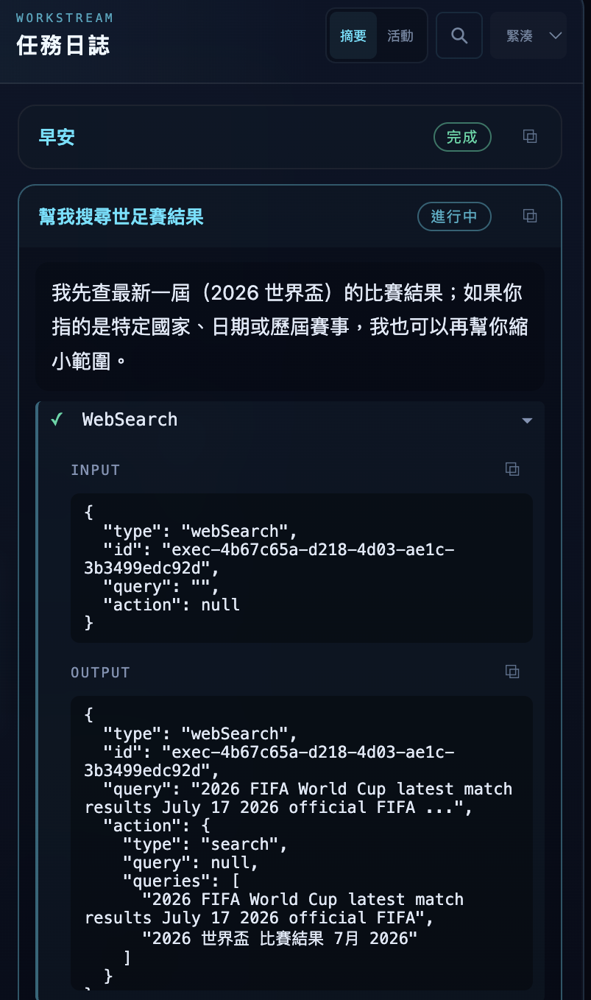
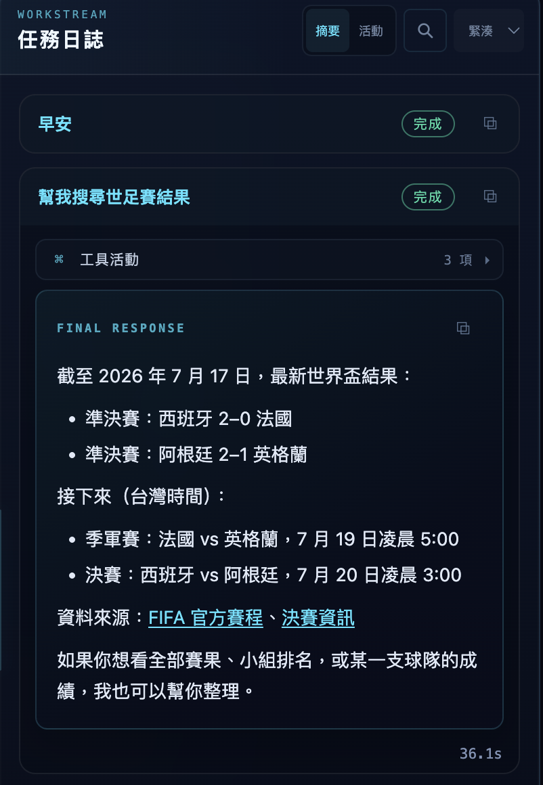
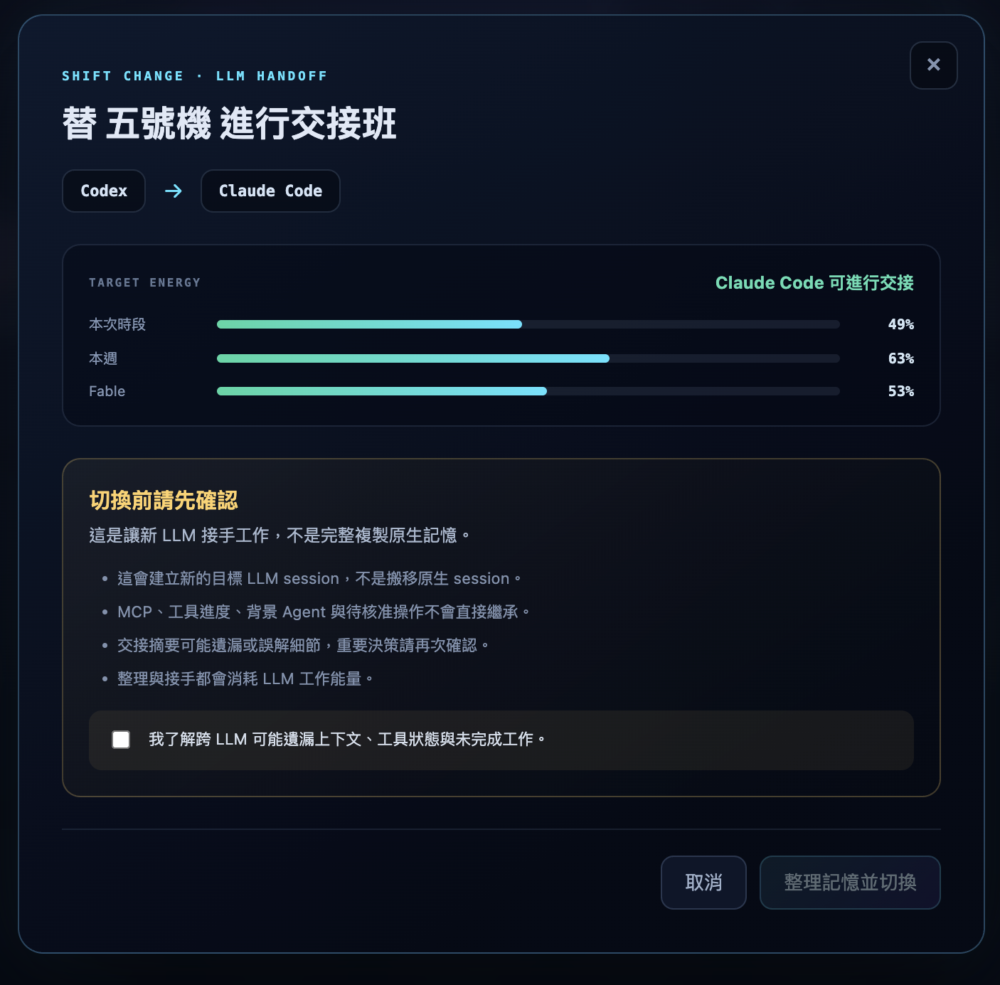
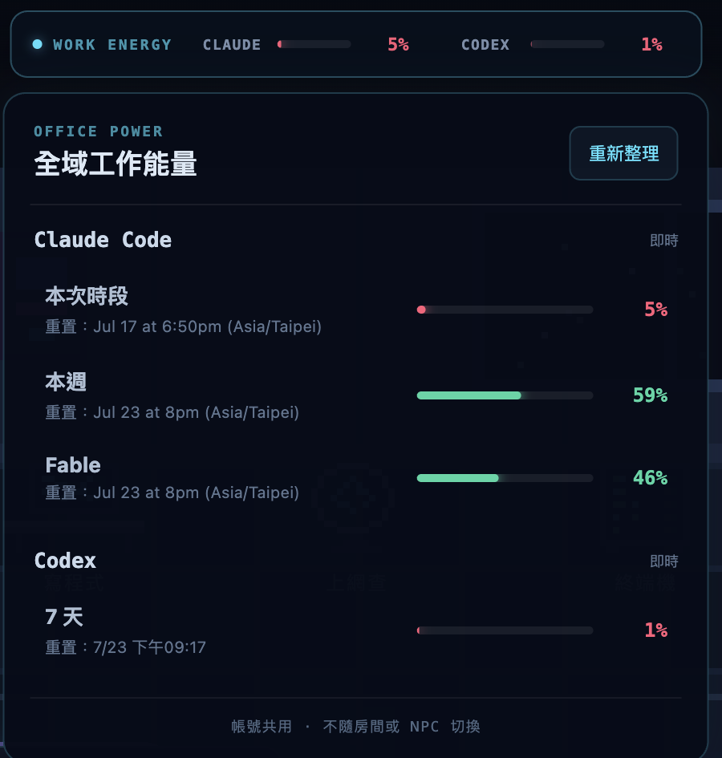
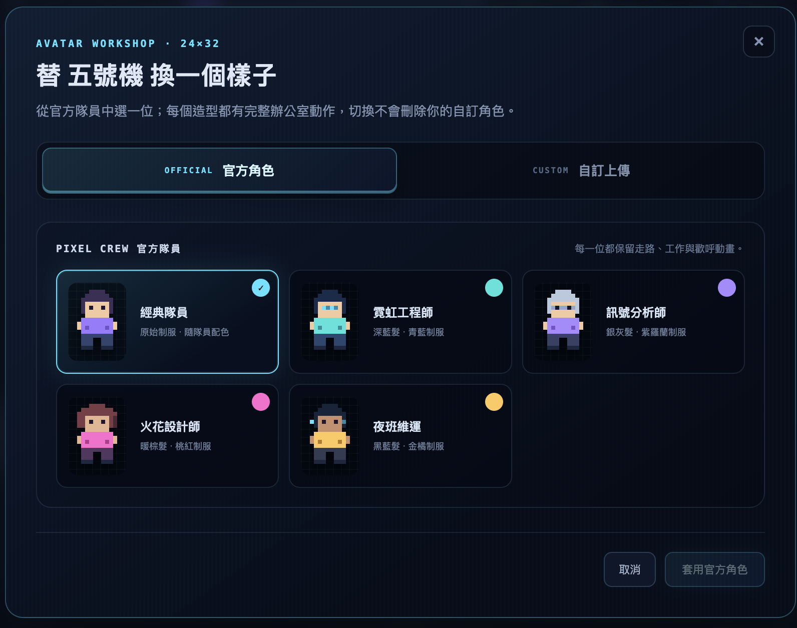
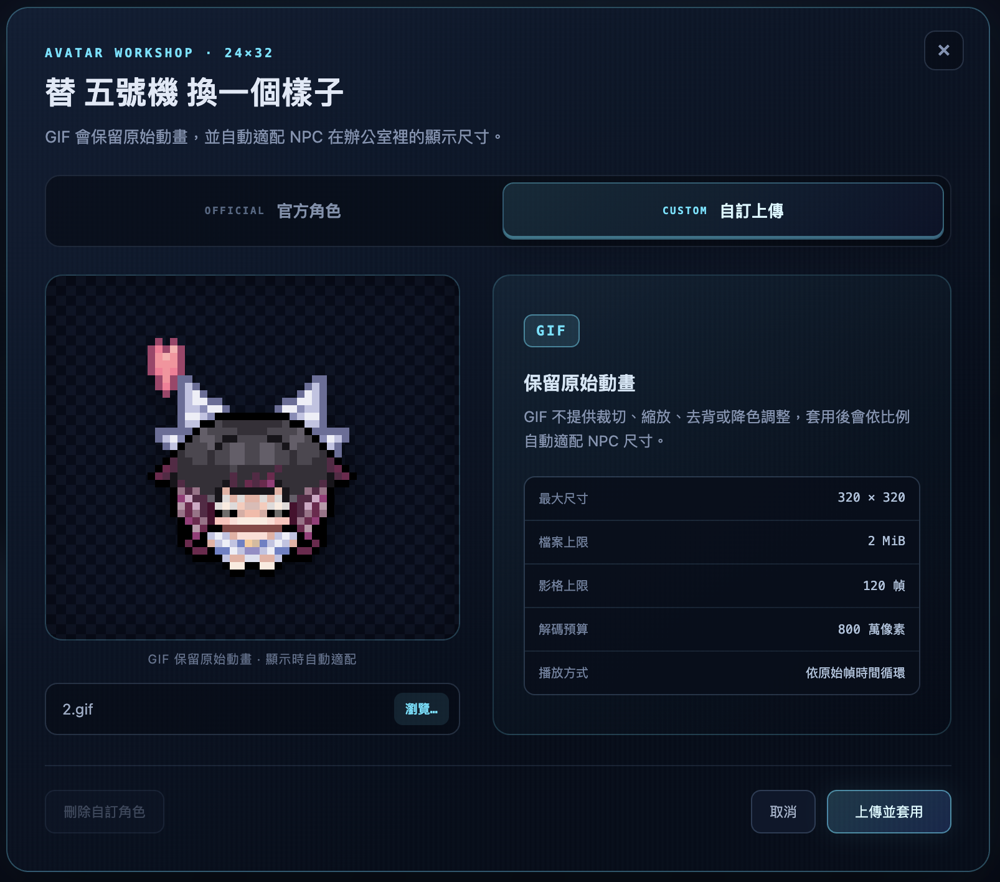

派下去，然後看著它走去上班。
在輸入列打一句話，NPC 就動身走到對應的工位——讀檔案、寫程式、上網查、跑終端機。 名牌上跳著已執行秒數，頭上的氣泡即時串流它正在說什麼。
- 工位＝工具：角色站在哪，就代表 agent 正在用什麼
- 完成慶祝：任務成功時鄰桌同事會轉頭歡呼，失敗則飄出小烏雲
- 這段錄影是真實任務的螢幕錄製，沒有剪接

誰在等你，一眼就看到。
Agent 要執行指令時，NPC 會停下來、頭上冒出「?」原地踱步， 核准按鈕直接浮在角色旁邊。不用切視窗、不用翻日誌——遠遠掃一眼就知道誰卡住了。
- 三個選擇：拒絕／本次皆允許／允許這一次
- 三段自動核准：關閉、安全（唯讀白名單放行）、完全（危險指令仍強制確認）
- 每個 NPC 獨立設定，互不影響

右鍵一按，整套人事作業。
對任何 NPC 按右鍵，五顆按鈕沿弧線彈開：重新命名、個性／職務、像素造型、切換房間、移除人員。
- 個性系統：給 NPC 一個持久的角色設定（「你是前端 QA，只提問題不改 code」），透過各 CLI 原生機制注入，重啟不會忘
- 像素工作坊：換造型、上傳自己的動態 GIF 頭像
- 跨 LLM 交接：Claude 做到一半，整理好進度摘要交給 Codex 接手（或反過來）
你的辦公室，你的視角。
拖曳空白處平移、滾輪或左下拉桿縮放——整數倍率，像素永遠銳利。 雙擊地板或按 ⟳ 一鍵回到預設構圖。
- NPC 一多，放大追某一個、拉遠看全局
- 名牌、氣泡、核准列全部跟著鏡頭走
- 平板可用：單指拖曳平移＋拉桿縮放
每一步，都攤在陽光下。
左圖是進行中：agent 說明它要查什麼，WebSearch 的輸入輸出逐字串流。 右圖是收工：最終回覆以 Markdown 完整渲染——清單、連結、資料來源，外加工具活動數與總耗時。
- 兩種視角：摘要模式只看結論，活動模式攤開每一次工具呼叫
- 可搜尋：跨任務全文搜尋目前 NPC 的日誌；程式碼區塊一鍵複製
- 桌面通知：切去別的視窗時，任務完成或等核准會發系統通知（預設關閉）




換一顆大腦，不丟工作。
Codex 額度見底、或這題 Claude 更擅長？替 NPC 辦交接班： 系統先整理目前的工作摘要，再交給另一個 LLM 的新 session 接手。
- 全域工作能量：頂欄常駐兩家 CLI 的即時用量，點開看本次時段／本週／各層級的重置時間
- 先看能量再換：交接前顯示目標 LLM 的即時用量，避免換過去馬上斷糧
- 誠實的告知：明確列出跨 LLM 會遺漏什麼（工具狀態、待核准操作），勾選確認才執行；Claude ⇄ Codex 雙向皆可
你的隊員，長你想要的樣子。
五位官方隊員造型直接換，或上傳自己的像素 GIF——動畫原樣保留， 自動適配 NPC 在辦公室裡的尺寸，走路、工作、歡呼動作照常。
- GIF 動態頭像：最大 320×320、120 幀，依原始幀時間循環播放
- 不怕手滑：切換官方造型不會刪除你的自訂角色，隨時換回來
- 搭配個性系統，讓「財報分析師」看起來真的像財報分析師

